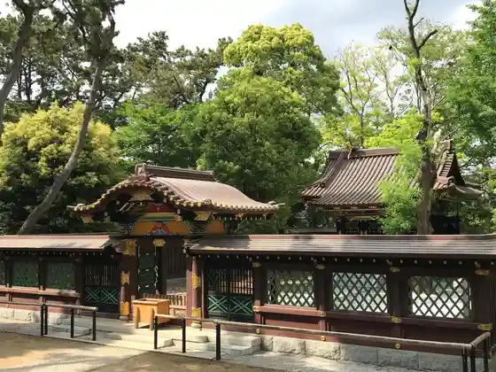
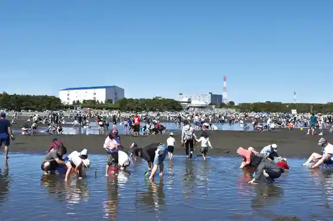
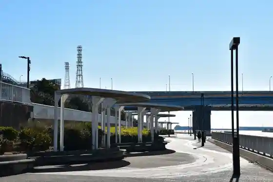
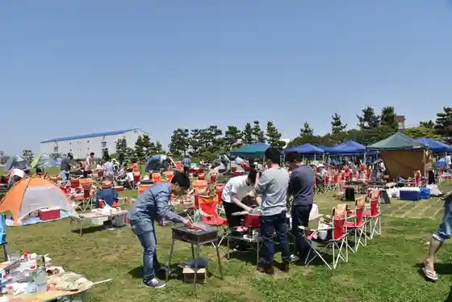

Funabashi Anderusen Park
Funabashi, Chiba · 047-457-6627 · Official / source link
Funabashi Dai Shrine (I Tomi Hi Shrine)
Funabashi, Chiba · 047-424-2333 · Official / source link

Shiohigari Ri / Funabashi Samban Se Seaside Park
Funabashi, Chiba · Official / source link

Funabashi Minato Shinsui Park
Funabashi, Chiba · 043-306-7810 · Official / source link

Funabashi Samban Se Seaside Park
Funabashi, Chiba · 047-435-0828 · Official / source link

Sandaime no Nankyoku Kansoku Fune SHIRASE5002
Funabashi, Chiba · 043-274-3191 · Official / source link
Ebigawa Jogingurodo
Funabashi, Chiba · 047-436-2473 · Official / source link
Chiba Prefectural Funabashi Kenmin Forest
Funabashi, Chiba · 047-457-4094 · Official / source link
Funabashi Megusupa
Funabashi, Chiba · 047-457-5151 · Official / source link
Funabashi Samban Se Kankyo Gakushu Kan
Funabashi, Chiba · 047-435-7711 · Official / source link
Nosambutsu Chokubai Tokoro Funakko Hatake
Funabashi, Chiba · 047-439-3061 · Official / source link
Funabashi Tami Bunka Horu
Funabashi, Chiba · 047-434-5555 · Official / source link
Samban Se Minatoya
Funabashi, Chiba · 047-434-0668 · Official / source link
Ninomiya Shrine (Funabashi)
Funabashi, Chiba · 047-472-1213 · Official / source link
Hi no Dai Shiseki Koen Museum
Funabashi, Chiba · 047-495-1325 · Official / source link